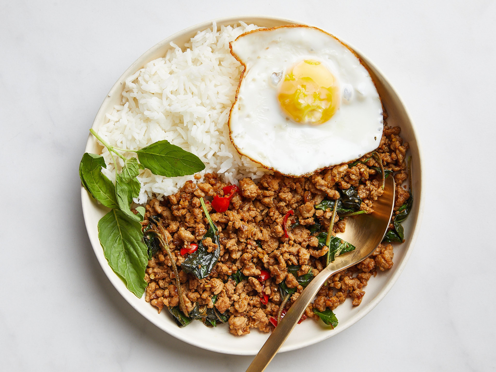

Pad Kra Pao
Home

Description
Pad Kra Pao is a very popular dish in Thailand. It is sweet, spicy and salty. When cooked well it's very tasty!
(Or as they say in Thailand, aloy mak!)
It's an easy dish to make, and relatively cheap. The colours are beautiful with the white and dark of the rice
and meat respectively, and the red of the chillis and green of the basil, topped with the orange of the fried
egg make it very
aesthetically pleasing, as well as delicious.
Ingredients
- 3 tablespoons vegetable oil
- 2 shallots (thinly sliced)
- 7 cloves garlic (sliced)
- 3 Thai bird or holland chilies (de-seeded, if desired, and thinly sliced)
- 1 pound ground pork (450g)
- 1 teaspoon sugar
- 1 tablespoon fish sauce
- 1 tablespoon thin/light soy sauce
- 2 teaspoons dark soy sauce
- 2 teaspoons oyster sauce
- ⅓ cup low sodium chicken broth or water
- holy basil leaves (about 1 1/2 cups packed)
Cooking Instructions
- In a wok over medium high heat fry oil, shallots and garlic.
- Add chillis and cook for another minute.
- Turn the heat up high, add the ground pork. Break the pork into small bits and allow it to turn crispy.
- Add sugar, fish sauce, soy sauce, dark soy sauce, and oyster sauce. Stir-fry for another minute. Deglaze
the pan with the broth or water. The liquid should cook off very quickly.
- Add basil and stir fry until wilted.
- Serve over rice.
- Optional: Add a fried egg on top!